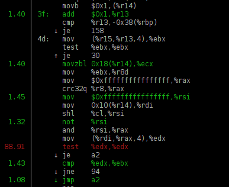
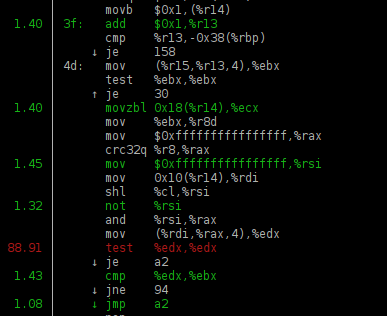
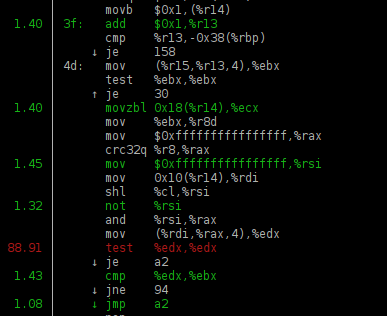

Time is spent for what? What is the bottleneck for the query?
 

... and common truths.
— CPU;
— RAM;
— disk;
— network.
... also the performance can be bounded by "sleep".
Resource utilization — is an aggregated value,
that usually cannot show the full picture.
If the utilization is "100%"
— it doesn't necessarily mean that you cannot make performance better.
If the utilization is less than "100%"
— it doesn't necessarily mean, that it's possible to do better.
Look at CPU utilization in top, htop, etc.
If it shows that CPU core is loaded 100% — it means that CPU is processing instructions, but:
— CPU can process different number of instructions per clock (IPC);
— CPU can spent time waiting for data to be loaded from memory or cache,
but this time is also accounted as CPU utilization (perf record);
— CPU can work with lowered clock frequency (turbostat, dmesg);
If it show that CPU (sum for all cores) is loaded for 50%:
— it's possible that it is enough,
if the Hyper-Threading does not make sense for your code;
— it's possible that you see some average metric for time interval, but
CPU is fully utilized at smaller intervals processing quick-response interactive queries.

... and SSD.
A program spend all its time for disk read,
but iostat shows utilization less than 100%:
— you use RAID, but the program performs reads with not big enough
buffer size with O_DIRECT or without readahead — disks
are used sequentialy rather than in parallel;
— you use RAID-10, but it has near, rather than far layout in mdadm;
— you use RAID-5/6, but have wrong stripe cache size;
— you do random reads with not enough level of paralellism.
(for SSD always use AIO (io_submit) to perform random reads).
And finally: always compress data stored on disk.
Linux shows that there is almost no "free" RAM:
— keep calm and don't look at "free" memory: https://www.linuxatemyram.com/.
Top show that the process allocated more memory than exists in the system:
— don't look at VIRT memory (large size of address space
— it is fine, better to look at RSS).
Memory usage graph shows that the process doesn't release memory:
— modern memory allocators (almost) don't release memory back to OS directly.
And finally: always disable swap;
A program spent all its time transferring data over the network,
but network is not utilized enough:
— probably you create a new TCP connection
for every data transfer;
— probably you use a single TCP connection
to transfer files over the network with high packet loss;
— probably you send data by small chunks
with TCP_NODELAY enabled.
And finally: always compress data transferred over the network.
top, htop: CPU, memory by process;
dstat: IO, network, ...;
iostat: IO by devices;
iotop: IO by process;
iftop: network by hosts;
perf top: CPU by functions inside processes;
SHOW PROCESSLIST
Или SELECT * FROM system.processes
SELECT * FROM system.merges
«clickhouse top»:
watch -n1 'clickhouse-client --query="SHOW PROCESSLIST"'
system.query_log
— can be enabled globally, for user, for session or for query;
— a setting: log_queries = 1;
— queries are logged twice: at the beginning and at the end of execution.
system.part_log
— can be enabled globally in config.xml;
— all operations on MergeTree data parts are logged.
System tables with logs are updated asynchronously.
(each 7 seconds). SYSTEM FLUSH LOGS to force write.
— select a list of queries
and perform load testing with clickhouse-benchmark:
clickhouse-client --query="
SELECT query FROM system.query_log
WHERE type = 2 AND event_date = today()
" > queries.tsv
clickhouse-benchmark < queries.tsv
— find the first query (root cause) that was lead to blow-up;
— create a report of resource usage by users.
SET send_logs_level = 'trace'
— logs will be sent from all nodes
participated in query processing
(distributed tracing);
Global:
— system.events;
— system.metrics;
— system.asynchronous_metrics.
For each query:
— system.processes;
— system.query_log.
For each query execution thread:
— system.query_thread_log.
User-space:
— FileOpen;
— NetworkReceiveElapsedMicroseconds;
— ReadBufferFromFileDescriptorReadBytes...
Kernel-space:
— OSReadChars;
— OSReadBytes;
— OSIOWaitMicroseconds;
— OSCPUWaitMicroseconds;
— UserTimeMicroseconds;
— SoftPageFaults...
| Metric | First run | Second run |
|---|---|---|
| Total time | 6.7 sec | 1.3 sec |
| ...FileDescriptorReadBytes | 2.56 GiB | 2.56 GiB |
| ReadChars | 2.56 GiB | 2.56 GiB |
| ReadBytes | 3.23 GiB | 3.13 MiB |
| IOWait | 87.3 sec | 0.023 sec |
| CPUWait | 0.027 sec | 0.045 sec |
| UserTime | 9.9 sec | 13.4 sec |
| SystemTime | 2.4 sec | 2.2 sec |
Web site: https://clickhouse.com/
Google groups: https://groups.google.com/forum/#!forum/clickhouse
Maillist: clickhouse-feedback@yandex-team.com
Telegram chat: https://telegram.me/clickhouse_en and https://telegram.me/clickhouse_ru (now with over 2000 members)
GitHub: https://github.com/ClickHouse/ClickHouse/ (now with 5400 stars)
Twitter: https://twitter.com/ClickHouseDB
+ meetups. Moscow, Saint-Petersburg, Novosibirsk, Ekaterinburg, Minsk, Nizhny Novgorod, Berlin, Palo Alto, Beijing, Sunnyvale, San Francisco, Paris, Amsterdam...